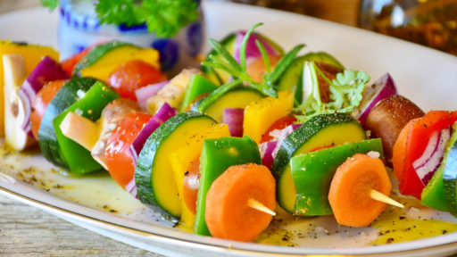

Subir Nueva Receta
Puntuar Recetas
Brochette de Carne Gourmet
Un brochette de carne es un plato donde trozos de carne y vegetales se ensartan en palitos y se cocinan a la parrilla o al asador, ofreciendo una combinación sabrosa y jugosa de carne y vegetales.
Con cuántas estrellas puntuarías está receta?:
- 500 g de carne de res (puede ser filete, lomo o similar), cortada en cubos grandes
- 1 pimiento rojo, cortado en trozos grandes
- 1 pimiento verde, cortado en trozos grandes
- 1 cebolla roja, cortada en trozos grandes
- 8 champiñones grandes, limpios
- 2 cucharadas de aceite de oliva
- Sal y pimienta al gusto
- 3 dientes de ajo, picados
- 1/4 taza de aceite de oliva
- 2 cucharadas de vinagre balsámico
- 1 cucharada de mostaza Dijon
- Sal y pimienta al gusto
Ingredientes
- Preparación de la marinada:
En un tazón pequeño, mezcla el ajo picado, el aceite de oliva, el vinagre balsámico, la mostaza Dijon, la miel, la sal y la pimienta. Mezcla bien hasta que esté combinado.
- Marinado de la carne:
Coloca los cubos de carne en un recipiente hermético y vierte la marinada sobre la carne. Mezcla para asegurarte de que todos los trozos estén cubiertos con la marinada. Cubre el recipiente y refrigera durante al menos 1 hora (puedes dejarlo marinar hasta por 4 horas para obtener más sabor).
- Montaje de los brochettes:
Precalienta la parrilla o el asador a temperatura media-alta.
En los palitos de brochette alternadamente ensarta los cubos de carne marinada, los pimientos, las cebollas y los champiñones.
- Cocción:
Unta ligeramente los brochettes con un poco de aceite de oliva y sazona con sal y pimienta.
Coloca los brochettes en la parrilla caliente y cocina durante 10-12 minutos, volteando ocasionalmente, hasta que la carne esté cocida a tu gusto y los vegetales estén tiernos y ligeramente dorados.
Instrucciones:
Brochette de Carne Gourmet
Su textura delicada y el sabor auténtico te transportarán a la cocina italiana, haciendo de cada bocado una experiencia gourmet inolvidable

Con cuántas estrellas puntuarías está receta?:
- 300 g de harina de trigo
- 3 huevos grandes
- 1 cucharada de aceite de oliva
- Una pizca de sal
Ingredientes
- Preparación de la masa:
En un bowl grande, forma un volcán con la harina y agrega los huevos en el centro.
Agrega el aceite de oliva y la pizca de sal.
Con un tenedor, comienza a mezclar los huevos y el aceite, incorporando gradualmente la harina desde los bordes hasta que todo esté bien combinado.
- Amasado:
Una vez que la masa comience a formarse, amasa sobre una superficie ligeramente enharinada durante unos 10-15 minutos, hasta que la masa esté suave y elástica. Si es necesario, agrega un poco más de harina para evitar que se pegue.
- Descanso:
Envuelve la masa en film transparente y deja reposar a temperatura ambiente durante al menos 30 minutos.
- Estirado y corte:
Divide la masa en porciones más pequeñas y estira cada porción con un rodillo hasta obtener una lámina fina (aproximadamente 1-2 mm de grosor).
Con un cuchillo o una máquina de pasta, corta la masa en tiras largas de aproximadamente 1 cm de ancho.
- Cocción:
Hierve abundante agua con sal en una olla grande.
Cocina los fideos caseros durante 2-3 minutos, o hasta que estén al dente.
Escurre bien y sirve inmediatamente con la salsa de tu elección, como una salsa de tomate casera, pesto, o aceite de oliva y ajo con hierbas frescas.
Instrucciones: